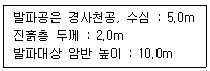
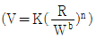
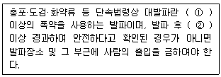

화약류관리산업기사 (2011-03-20 기출문제)
1과목: 일반화약학
1. 질산나트륨 분해시 1g당 산소의 과부족량(OB)은 약 얼마인가?
- -0.2
- +0.34
- -0.392
- +0.471
(정답률: 알수없음)

2. ANFO 폭약에서 배합되는 연료유의 혼합비는 약 %인가?
- 12
- 9
- 6
- 3
(정답률: 알수없음)
3. 다음 화약류 중 발화점이 가장 높은 것은?
- 니트로글리세린
- DDNP
- 뇌홍
- 질화납
(정답률: 알수없음)
4. 석탄광산에서 발파시 탄광 폭발의 원인 물질이 되는 가스는?
- 이산화탄소
- 질소
- 메탄
- 산소
(정답률: 알수없음)
5. 니트라민계 화합화약류가 아닌 것은?
- 니트로구아니딘
- 테트릴
- PETN
- 헥소겐
(정답률: 알수없음)
6. 감열소염제에 해당하는 것은?
- 규소철
- 질산암모늄
- 염화칼륨
- 규조토
(정답률: 알수없음)
7. 니트로셀룰로오스를 함유하지 않은 것은?
- 교질다이너마이트
- 무연화약
- 분상다이너마이트
- 카알릿
(정답률: 알수없음)
8. 화약류의 안정도 시험에 해당되지 않는 것은?
- 내열시험
- 유리산시험
- 가열시험
- 전기감도시험
(정답률: 알수없음)
9. 다음 중 자연분해하여 연소와 폭발을 일으킬 위험이 가장 높은 것은?
- 흑색화약
- 무연화약
- 과염소산염계 폭약
- TNT
(정답률: 알수없음)
10. 화약류의 일효과(동적효과)를 측정하는 시험방법에 해당하는 것은?
- 유리산시험
- 내화강도시험
- Hess 맹도시험
- 낙추시험
(정답률: 알수없음)
11. 초안유제 폭약를 폭발시키려면 무엇을 사용해야 하는가?
- 전폭약
- 6호 뇌관 1본
- 흑색화약
- 도화선
(정답률: 알수없음)
12. 도화선의 시험법이 아닌 것은?
- 연소속도
- 점화력
- 감응성
- 내수성
(정답률: 알수없음)
13. 질산암모늄에 대한 설명으로 틀린 것은?
- 분자량은 약 80 이다.
- 분자내에 산소 원자를 함유하고 있다.
- 열분해하여 다량의 가스를 발생한다.
- 내수성이 강하고 흡습성이 없다.
(정답률: 알수없음)
14. 도화선의 심약으로 사용되는 것은?
- 무연화학
- 뇌홍
- 흑색화약
- 니트로글리콜
(정답률: 알수없음)
15. 화약류의 폭발 또는 연소로 생성될수 있는 다음 가스 중 가장 유해한 것은?
- CO2
- H2O
- N2
- NO2
(정답률: 알수없음)
16. 완연 도화선의 연소 초시의 범위는 몇 s/m인가?
- 50∼100
- 100∼140
- 150∼200
- 200∼300
(정답률: 알수없음)
17. TNT 제조시 sellite 법으로 정제한 제품의 응고점은 보통 몇 ℃정도인가?
- 40
- 80
- 100
- 120
(정답률: 알수없음)
18. 폭발압의 단위로 옳은 것은?
- cal/kg
- kgf/cm2
- m/s
- m3/kg
(정답률: 알수없음)
19. 다음 화약 중 폭속이 가장 큰 것은?
- TNT
- 흑색화약
- 질산암모늄 폭약
- 테트릴
(정답률: 알수없음)
20. 뇌관 1개의 저항 1.4Ω인 전기뇌관 10발을 직렬로 결선하여 제발하려면 최소 몇 V의 전압이 필요한가? (단, 단선 1m의 저항은 0.02Ω이고 전선의 총 연장길이는 100m이며, 뇌관 1개당 소요 전류는 2A, 발파기의 내부저항은 없다고 한다.)
- 9
- 18
- 32
- 36
(정답률: 알수없음)
2과목: 발파공학
21. 다음 중 도통시험기로 확인할 수 없는 사항은?
- 발파모선의 단선여부
- 발파모선의 각선과의 연결누락 여부
- 발파기의 용량부족 여부
- 전기뇌관에 대한 백금전교의 단선여부
(정답률: 알수없음)
22. 다단식 발파기를 이용한 발파에 대한 설명으로 옳지 않은 것은?
- 재래식 분할발파와 비교하여 전기적으로 안전해진다.
- 전기뇌관의 지연시차 한계를 어느 정도 극복할 수 있다.
- 지연 그룹별로 별도의 모선을 필요로 한다.
- 파쇄입도의 개선과 발파진동 및 소음을 제어할 수 있다.
(정답률: 알수없음)
23. 전폭약의 장전법 중 역기폭에 대한 설명으로 옳지 않은 것은?
- 전폭약을 발파공의 안쪽 끝에 위치시키는 방법이다.
- 정기폭에 비해 충격파가 자유면에 도달하는 시간이 빨라 발파위력이 크다.
- 기폭점이 안쪽에 있으므로 발파위력이 내부에 더욱 크게 작용하여 잔류공을 남기는 일이 없다.
- 역기폭은 각선의 길이가 길어져서 비경젝이며 폭약을 다져 넣는데도 주의해야 한다.
(정답률: 알수없음)
24. 평행공 심발법인 coromant cut 에 대한 설명으로 옳지 않은 것은?
- 소단면 갱도에서 1발파당 굴진길이를 경사공 심발법보다 길게 하기 위해 고안된 천공법이다.
- 천공 예정 암벽에 안내판을 사용하여 천공배치가 정확하게 된다.
- 저렴하고 간단한 보조 기구만으로 미숙련 작업자도 용이하게 천공할 수 있다.
- 파쇄 암석이 가일층 균일하므로 적제 능력이 향상된다.
(정답률: 알수없음)
25. 벤치발파에서 열과 열 사이의 지연시간에 따른 발파결과로 옳지 않은 것은?
- 짧은 지연시간은 비산에 대한 더 많은 잠재력을 가진다.
- 짧은 지연시간은 폭력, 폭풍을 감소시킨다.
- 긴 지연시간은 지반 진동의 수준을 감소시킨다.
- 긴 지연시간은 여굴을 감소시킨다.
(정답률: 알수없음)
26. 다음 중 집중발파(조합발파)의 목적으로 옳은 것은?
- 자유면의 증대
- 암석계수의 증대
- 천공경의 증대
- 최소저항선의 증대
(정답률: 알수없음)
27. 다음과 같은 조건에서 수중발파를 실시할 때 비장약량은 얼마인가? (단, Gustafsson의 제안식을 사용하고, 경사천공에 따른 비장약량은 1.0kg/m3으로 한다.)

- 0.67kg/m3
- 1.⑤kg/m3
- 1.39kg/m3
- 2.33kg/m3
(정답률: 알수없음)
28. 발파진동을 저감하는 방법으로 옳지 않은 것은?
- 현장 암석의 종류와 암질에 따른 최적 장약량으로 적정한 파쇄가 이루어지도록 계획한다.
- 장공발파의 경우 분산장약하고, 공저에서부터 기폭되도록 뇌관을 배치한다.
- 주 발파 실시전에 마무리면을 따라 pre-splitting 발파를 실시해서 파단면을 조성한다.
- 천공경에 비하여 약경이 작은 폭약을 사용한 디커플링 장약을 실시한다.
(정답률: 알수없음)
29. 다음 중 잔류약의 발생원인에 해당하지 않는 것은?
- 분말계 폭약의 비중 과대
- 장기저장에 의한 폭약의 변질
- 장전작업시 약포간에 공간을 남긴채 장전할 경우
- 발파기의 용량 부족
(정답률: 알수없음)
30. 다음 중 조절발파법인 Line Drilling 에 대한 설명으로 옳지 않은 것은?
- 굴착예정면을 따라 일렬의 공들을 좁게 연속적으로 천공하여 인위적인 파단면을 형성하는 공법이다.
- 파단 예정면에 천공한 공에는 장약을 하지 않는 것이 특징이다.
- 예정 파단선상의 공들은 평형 천공이 이루어지므로 천공작업이 쉽고, 발파시 매끈한 파단면을 얻을 수 있다.
- 천공간격을 밀접하게 하기 때문에 천공비용이 많이 들며, 균질하지 않은 암반에서는 비효율적인 방법이다.
(정답률: 알수없음)
31. Wide Space Blasting(확대발파법)에 관한 설명으로 옳지 않은 것은?
- 일반 벤치발파에 비해 공간격/저항선의 비율을 2∼8배 정도로 한다.
- 비교적 균일하고 작은 크기의 파쇄 버력을 얻을 목적으로 사용한다.
- 보통의 계단식 발파에 비해 장약량을 증대시킨다.
- 천공장은 보통 계단식 발파 때와 동일하게 한다.
(정답률: 알수없음)
32. 다음 중 일반적으로 평균 암석계수 (g) 값이 가장 작은 암석은?
- 응회암
- 규암
- 화강암
- 석회암
(정답률: 알수없음)
33. 발파해체공법 중 전도공법에 대한 설명으로 옳지 않은 것은?
- 기술적으로 가장 간단한 공법이다.
- 붕락시 구조물을 외측에서 내측으로 끌어당기도록 유도하는 공법이다.
- 전도방향으로의 충분한 공간확보가 필요하다.
- 전도방향의 제어로 계획된 공간내에서 붕괴가 가능하다.
(정답률: 알수없음)
34. 벤치 높이 1.4m인 2자유면 벤치발파에서 천공간격과 최소저항선을 1.2m로 할 때 필요한 장약량은? (단, 발파계수는 0.3으로 한다.)
- 0.3kg
- 0.6kg
- 0.8kg
- 1.2kg
(정답률: 알수없음)
35. 비석의 비산형태를 기술적인 측면에서 분류한 것 중 옳지 않은 것은?
- 전체 발파면에서의 전방비산
- 장약공의 장약폭발에 의한 비산
- 암석강도 등의 저하에 의한 비산
- 가스압력에 의한 표면에서의 비산
(정답률: 알수없음)
36. 다음 중 누두공 시험에 대한 설명으로 옳지 않은 것은?
- 폭약의 위력이나 암석발파에 대한 저항성을 알고, 약량산정을 위한 자료를 얻을 목적으로 실시한다.
- 누두공의 반경과 최소저항선과의 비를 누두지수라 한다.
- 누두지수가 1보다 클 때 과장약이라고 한다.
- 표준장약발파의 장약량은 누두공의 부피에 반비례한다.
(정답률: 알수없음)
37. 기록 전압 35V, 내부 저항 10Ω인 발파기를 이용하여 직렬로 연결된 지발 전기뇌관(1개당 평균 저항 1.30Ω)을 최대 몇 발까지 기폭시킬 수 있는가? (단, 발파모선(저항은 0.013Ω/m)의 총연장은 100m, 점화에 필요한 전류는 1.0A이다.)
- 9
- 12
- 15
- 18
(정답률: 알수없음)
38. 암반내에 존재하는 불연속면이 발파효과에 미치는 영향으로 옳지 않은 것은?
- 불연속면의 밀도가 높을수록 발파진동은 쉽게 감소하지 않는다.
- 발파과정에서 예상치 못한 비산과 소음이 발생할 수 있다.
- 동일한 발파조건에서 불연속면의 간격이 좁을수록 작은 크기의 암괴를 얻을 수 있다.
- 발파에 의해서 발생한 균열 전파를 중단시킬 수 있다.
(정답률: 알수없음)
39. 다음 중 ABFO 장전작업에 대한 설명으로 옳지 않은 것은? (단, 발파작업표준안전작업지침(고용노동부 고시 제 2001-17)을 기준으로 한다.)
- 장전호스는 가급적 계속 연결한 호스를 사용한다.
- 장전호스는 발파공의 길이보다 60cm 이상 긴 것을 사용한다.
- 장전할 때에는 장전기를 충분히 접지한다.
- 장약중에는 발파공에서 ANFO의 분출이 없도록 한다.
(정답률: 알수없음)
40. 다음은 안전발파설계에 흔히 사용되는 경험적 발파진동식이다. 이 식에 대한 설명으로 옳지 않은 것은?

- R/Wb를 환산거리로 정의한다.
- b는 지반을 구성하는 암석의 종류에 따른 값이다.
- K와 n은 지반의 진동감쇠특성을 나타낸다.
- W는 각 발파공의 지발당 장약량을 나타낸다.
(정답률: 알수없음)
3과목: 암석역학
41. 다음 중 지표면에서부터 굴착하여 소정의 위치에 지하구조물을 시공한 다음 그 윗부분을 되메워 지표면을 복구하는 공법은?
- NATM 공법
- TBM 공법
- 개착 공법
- 쉴드 공법
(정답률: 알수없음)
42. 다음 중 암반의 시간 의존적인 특성으로 옳지 않은 것은?
- 크리프 (creep)현상
- 응력완화(stress relaxation)
- 소성(plasticiyy)
- 피로(fatigue)현상
(정답률: 알수없음)
43. 주응력면에서의 전단응력의 크기는?
- 주응력의 1/2이다.
- 주응력의 2배이다.
- 주응력의 √2배이다.
- 0이다.
(정답률: 알수없음)
44. 암반분류법인 Q-시스템에 대한 설명으로 옳지 않은 것은?
- RQD/Jn항목은 불연속면에 의해 형성되는 블록의 변질정도를 나타낸다.
- Jr/Ja항목은 절리면 또는 충전물의 거칠기 및 마찰특성을 나타낸다.
- Jw/SRF 항목에서는 터널 굴착 현상에서의 지하수압 및 현장응력(active stress) 수준이 고려된다.
- Q-시스템은 6개의 변수를 사용하여 암질을 정량적으로 평가하는 방법이다.
(정답률: 알수없음)
45. 터널 벽면의 두 점간의 상대변위를 측정할 수 있는 계측기는?
- 내공변위계
- 지중경사계
- 지중변위계
- 응력측정지
(정답률: 알수없음)
46. 다음 중 암석의 전단강도를 측정하는 시험법은?
- 후프테스트(hoop test)
- 훰시험(bending test)
- 압열인장시험(Brazilian test)
- 펀치테스트(punch test)
(정답률: 알수없음)
47. 다음 중 크리프 (creep)에 대한 설명으로 옳지 않는 것은?
- 시험편에 응력을 가하고 제거하는 반복응력을 지속적으로 적용하는 경우, 강도의 저하가 발생되어 변형률이 증가하는 현상이다.
- 시험편에 가해지는 응력 수준에 따라 크리프 거동은 달리 나타난다.
- 크리프 거동은 일반적으로 3단계로 구분하는데 1차 크리프는 거동이 비선형적이며 전이 크리프라고도 한다.
- 암석의 크리프 가동에 영향을 미치는 요인은 응력의 종류, 응력의 크기, 구속압, 온도 등이다.
(정답률: 알수없음)
48. 경사각이 60°인 건조한 사면 위에 육면체의 암석블록이 놓여 있다. 암석블럭의 바닥 면적은 2.0m2, 암석블록의 무게는 3000kg, 암석블록 바닥과 사면 사이의 점착력은 0, 마찰각은 30°이다. 록볼트가 사면의 지면과 40°경사로 설치되었다. 사면의 안전율이 3이 되기 위해 필요한 록볼트의 인장력은? (단, 중력가속도는 10m/s2이다.)
- 20kN
- 26kN
- 30kN
- 36kN
(정답률: 알수없음)
49. RMR 값이 50, 단위중량이 2000kg/m3인 암반에 폭 10m의 터널을 굴착하고자 한다. 이때 필요한 지보하중은 얼마인가?
- 1000kN
- 5000kN
- 10000kN
- 20000kN
(정답률: 알수없음)
50. 평면 변형률(Plane Strain)해석에 관한 설명으로 옳지 않은 것은? (단, v는 포아송비이다.)
- 3차원 해석을 보다 간단히 하기 위한 방법 중의 하나이다.
- 세 직교방향의 변형률 중에서 적어도 하나는 0인 것이 특징이다.
- 암반 내에 굴착한 긴 수평 터널의 해석에 적합한 방법이다.
- 구속된 방향이 Z방향이면 σz=v(σx-σy)이다.
(정답률: 알수없음)
51. 암반사면에 분포하는 불연속면의 경사방향/경사가 020/35로 조사되었다. 이를 주향, 경사로 나타낸 것 중 옳은 것은?
- N20E, 35SE
- N70W, 35NE
- N20W, 35SW
- N70E, 35SW
(정답률: 알수없음)
52. 다음 중 암반사면의 평면파괴가 발생하는 지질 구조적 조건으로 옳지 않은 것은?
- 활동면은 반드시 사면에 평행하거나 거의 평행한 주향을 가져야 한다.
- 활동면의 경사각은 사면의 경사각보다 작아야 한다.
- 활동면의 마찰각은 활동면의 경사각보다 커야 한다.
- 미끄럼짐에 대하여 저항력을 거의 갖지 못하는 이완면이 미끄러짐의 측면 경계부로서 암반 내에 존재하여야 한다.
(정답률: 알수없음)
53. 파괴면에 대한 전단응력과 법선응력 사이의 직선의 식으로 표현되며, 암석에 대한 전단파괴조건을 표현한 암석 파괴이론은?
- 내부마찰각이론
- 전단변형에너지이론
- Hoek-Brown 이론
- Griffith 이론
(정답률: 알수없음)
54. 사면에서의 암반분류법으로 사용되는 SMR 법의 보정요소로 옳지 않은 것은?
- 사면과 불연속면의 경사각의 차이
- 불연속면의 마찰각
- 사면과 불연속면의 주향방향의 차이
- 사면의 채굴방법
(정답률: 알수없음)
55. 특정한 균열의 형태나 외부응력 조건에 따라 균열 첨단에 인접한 영역에 집중되는 응력의 크기를 결정하는 요소를 의미하는 것은?
- 표면에너지
- 균열확장력
- 응력확대계수
- 파괴강성도
(정답률: 알수없음)
56. 평면응력상태에서 x면에 작용하는 응력(σx)이 20MPa, y면에 작용하는 응력 (σy)이 30MPa이다. 이때, 포아송비(v)가 0.2, 그리고 탄성계수 (E)가 100MPa이라면 z방향의 변형률은?
- 0
- -0.1
- -0.2
- -0.3
(정답률: 알수없음)
57. 다음 중 점탄성 물체를 표현하기 위한 이상물체의 연결 방법으로 가장 적합한 것은?
- Spring과 Dashpot를 병렬로 연결한다.
- Spring과 Slider를 병렬로 연결한다.
- Spring과 Dashpot를 직렬로 연결한다.
- Spring과 Slider를 직렬로 연결한다.
(정답률: 알수없음)
58. 암반에 대한 초기응력 측정 시험법이 아닌 것은?
- 플랫잭법(Flat jack test)
- 수압파쇄법(Hydraulic fracturing test)
- 응력해방법(Overcoring)
- 압력터널시험(Gallery test)
(정답률: 알수없음)
59. 지하 200m 암반에 공동을 건설할 예정이다. 이 암반의 최소주응력은 50MPa이고 이 구간을 시추헤서 얻은 무결암에 대한 일축압축강도 110MPa이다. 공동을 굴착하면 최대 150MPa의 응력이 암반에 작용한다고 한다. m=0.7, s=0.06 일 때, Hoek-Brown의 파괴기준에 의하여 이 암반이 파괴되기 위한 최대주응력은 얼마인가?
- 108MPa
- 118MPa
- 128MPa
- 138MPa
(정답률: 알수없음)
60. 암석을 구성하고 있는 광물 결정이 일정한 화학조성과 결정배열을 가짐으로써 그 결정의 방향에 따라 다른 성질이 나타나는 경우가 있다. 이러한 암석의 성질과 관련이 있는 것은?
- 등방성
- 균질성
- 이방성
- 불균질성
(정답률: 알수없음)
4과목: 화약류 안전관리 관계 법규
61. 폭약을 수출 또는 수입하고자 하는 사람은 행정안전부령이 정하는 바에 의하여 그때마다 누구의 허가를 받아야 하는가?
- 경찰서장
- 지방경찰청장
- 경찰청장
- 행정안전부장관
(정답률: 알수없음)
62. 화약류의 적재방법의 기술상의 기준으로 옳지 않은 것은?
- 운반중에 마찰 또는 동요되거나 굴러 떨어지지 아니하도록 할 것
- 화약류는 싣고자 하는 차량의 적재정량의 80%에 상당하는 중량(외장의 중량 제외)을 초과하여 싣지 아니할 것
- 화약류는 발화성 또는 인화성 물질과 동일한 차량에 함께 싣지 아니할 것
- 화약류는 방수 및 내화성이 있는 덮개로 덮을 것
(정답률: 알수없음)
63. 다음 중 화약류관리보안책임자 면허가 반드시 취소되는 사유로 옳지 않은 것은?
- 속임수를 써서 면허를 받은 사실이 드러난 때
- 국가기술자격법에 의하여 자격이 취소된 때
- 면허를 다른 사람에게 빌려준 때
- 공공의 안녕질서를 해칠 염려가 있다고 믿을 만한 상당한 이유가 있을 때
(정답률: 알수없음)
64. 화약류를 운반하는 사람이 화약류운반신고필증을 지니지 아니한 때에 받게 되는 과태료로 맞는 것은?
- 500만원 이하의 과태료
- 300만원 이하의 과태료
- 200만원 이하의 과태료
- 100만원 이하의 과태료
(정답률: 알수없음)
65. 화약류 제조시설의 기준 중 불이 날 위험이 있는 일광건조장과 다른 시설간의 거리가 얼마 미만인 때에는 그 시설과의 사이에 간이흙둑 또는 방폭벽을 설치해야 하는가? (단, 법령상 규정거리)
- 5m
- 10m
- 20m
- 30m
(정답률: 알수없음)
66. 지상 1급 저장소 출입문의 덧문에는 얼마 이상의 두께의 철판으로 보강하여야 하는가?
- 1mm 이상
- 2mm 이상
- 3mm 이상
- 4mm 이상
(정답률: 알수없음)
67. 화약류 취급소의 설치기준으로 옳지 않은 것은?
- 단층 건물로서 철근 콘크리트조, 콘크리트블럭조 또는 이와 동등 이상의 견고한 재료를 사용하여 설치할 것
- 문짝 외면에 두께 2mm이상의 철판을 씌우고 2중 지물쇠 장치를 할 것
- 지붕은 스레트·기와 그밖의 불에 타지 아니하는 재료를 사용할 것
- 난방장치를 하는 때에는 온수·증기를 이용하고 안전을 위해 열기는 이용하지 말 것
(정답률: 알수없음)
68. 다음 ( )안에 들어갈 내용으로 옳은 것은?

- ① 300kg, ② 30분
- ① 250kg, ② 30분
- ① 300kg, ② 15분
- ① 250kg, ② 15분
(정답률: 알수없음)
69. 저장소별 화약류 최대저장량의 연결로 옳지 않은 것은?
- 1급 저장소 - 화약 80톤
- 2급 저장소 - 폭약 10톤
- 3급 저장소 - 도폭선 1500m
- 간이 저장소 - 미진동파쇄기 500개
(정답률: 알수없음)
70. 다음 중 화약류 양도·양수허가와 관련한 설명으로 옳지 않은 것은?
- 사용지가 특정되지 아니한 경우에는 양수하고자 하는 사람의 주소지를 관할하는 경찰서장의 허가를 받아야 한다.
- 제조업자가 제조할 목적으로 화약류를 양수하거나 제조한 화약류를 양도하는 경우는 양도·양수허가가 필요없다.
- 화약류의 수입허가를 받은 사람이 화약류의 수입과 관련하여 화약류를 양도·양수하는 경우에는 양도·양수허가가 필요 없다.
- 광업법에 의하여 광물을 채굴하는 사람이 채굴목적으로 행정안전부령이 정하는 수량 이외의 화약류를 사용시에는 양도·양수허가가 필요 없다.
(정답률: 알수없음)
71. 다음 중 제3종 보안물건에 해당하지 않는 것은?
- 선박의 항로
- 변전소
- 고압전선
- 고압가스저장시설
(정답률: 알수없음)
72. 화약류의 운반기간이 경과한 때의 화약류운반신고필증의 반납은 누구에게 하여야 하는가?
- 발송지를 관할하는 경찰서장
- 도착지를 관할하는 경찰서장
- 발송지를 관할하는 구청장
- 도착지를 관할하는 구청장
(정답률: 알수없음)
73. 다음 중 허가를 받지 아니하고 제조할 수 있는 화약류의 수량으로 옳은 것은? (단, 학교·연구소 등 공인된 기관에서 물리·화학상의 실험목적으로 사용하기 위한 것이며, 꽃불류의 원료용임)
- 화약 1회 600g 이하
- 폭약 1회 400g 이하
- 신호화전 1회 600g 이하
- 신호염관 1회 1000g 이하
(정답률: 알수없음)
74. 다음 중 안정도시험의 결과보고에 포함되지 않아도 되는 사항은?
- 시험실시 연월일
- 시험방법 및 시험장소
- 시험을 실시한 화약류의 제조일
- 시험을 실시한 화약류의 종류 및 수량
(정답률: 알수없음)
75. 토목업자가 사업을 위해 화약류저장소 외의 장소에 저장할 수 있는 화약류의 수량으로 옳은 것은? (단, 화약류저장소가 있으며, 6월 이내에 종료하는 사업의 경우)
- 공업용뇌관 및 전기뇌관 100개
- 폭약 5kg
- 화약 10kg
- 도폭선 1000m
(정답률: 알수없음)
76. 화약류저장소에 흙둑을 쌓는 경우 설치 기준으로 옳지 않은 것은?
- 흙둑은 저장소의 바깥쪽 벽으로부터 흙둑의 안쪽벽 밑까지 1m이상 2m 이내의 거리를 두고 쌓을 것
- 흙둑을 부득이 흙담으로 하는 경우에는 흙둑의 높이의 2분의 1 이하로 할 것
- 흙둑의 경사는 45도 이하로 하고, 정상의 폭은 1m 이하로 할 것
- 2개 이상의 저장소가 인접하여 중간의 흙둑을 같이 사용하는 때에는 그 흙둑에 통로를 설치하지 아니할 것
(정답률: 알수없음)
77. 피뢰장치의 피뢰도선 및 가공지선의 전극 기준으로 옳은 것은?
- 전극은 구리판 또는 그 이상의 전도성이 있는 금속으로 할 것
- 전극은 피뢰도선마다 2개 이상으로 할 것
- 전극을 땅에 묻을 때에 그 부근에 가스관이 있을 경우에는 그로부터 2m 이상의 거리를 둘 것
- 전극의 접지저항은 피뢰도선이 2줄 이상인 때에는 그 1줄마다 10[Ω] 이하로 할 것 (예외사항 제외)
(정답률: 알수없음)
78. 운반신고를 하지 아니하고 운반할 수 있는 화약류의 종류 및 수량으로 옳은 것은?
- 실타(1개당 장약량 0.5g 이하) : 20만개
- 꽃불류(장난감용 꽃불류 제외) : 500kg
- 도폭선 : 2000m
- 미진동파쇄기 : 5000개
(정답률: 알수없음)
79. 화약류의 포장기준에 대한 설명으로 옳지 않은 것은?
- 겉포장에는 손잡이를 하여 운반에 편리하도록 하고, 안전한 조치를 하여야 한다.
- 화약류는 그 화약류와 화학작용을 일으키지 아니하는 속포장에 넣은 다음 행정안전부령이 정하는 겉포장에 넣어야 한다.(예외사항 제외)
- 속포장에는 취급상의 필요한 주의사항을 명확히 기재하여야 한다.
- 속포장 및 겉포장에는 화약류의 종류, 수량, 성능, 제조소명, 제조년월일 등을 기재하여야 한다. (다만, 기재가 곤란한 속포장은 그러지 아니한다.)
(정답률: 알수없음)
80. 야간에 화약류를 운반하는 도중 주차하고자 할 때 차량의 전방과 후방의 얼마 지점에 적색 등불을 다는가?
- 50m 지점
- 30m 지점
- 15m 지점
- 10m 지점
(정답률: 알수없음)
2NaNO3 → 2NaNO2 + O2
이 식에서 2 몰의 질산나트륨이 분해될 때 1 몰의 산소가 생성됩니다. 따라서 1 몰의 질산나트륨이 분해될 때 0.5 몰의 산소가 생성됩니다.
질산나트륨의 몰량은 분자량을 이용하여 다음과 같이 계산할 수 있습니다.
NaNO3의 분자량 = 23 + 14 + 3 × 16 = 85 g/mol
따라서 1 g의 질산나트륨은 다음과 같이 계산할 수 있습니다.
1 g / 85 g/mol = 0.0118 mol
0.0118 mol의 질산나트륨이 분해될 때 생성되는 산소의 몰 수는 다음과 같습니다.
0.0118 mol × 0.5 mol/mol = 0.0⑤9 mol
따라서 1 g의 질산나트륨이 분해될 때 생성되는 산소의 질량은 다음과 같습니다.
0.0⑤9 mol × 16 g/mol = 0.0944 g
산소의 질량이 부족한 경우를 음수로, 과부족한 경우를 양수로 표기합니다. 따라서 산소의 과부족량은 다음과 같습니다.
(0.0944 g - 0 g) / 1 g × 100% = 9.44%
산소의 과부족량을 몰 단위로 환산하면 다음과 같습니다.
9.44% / 16 g/mol = 0.⑤9 mol
1 g의 질산나트륨이 분해될 때 생성되는 산소의 과부족량은 0.⑤9 mol입니다. 그러나 문제에서는 1 g당 산소의 과부족량을 구하라고 했으므로 다음과 같이 계산합니다.
0.⑤9 mol / 0.0118 mol/g = 5 mol/g
따라서 1 g의 질산나트륨이 분해될 때 생성되는 산소의 과부족량은 +5 mol/g입니다. 이 값을 소수점 셋째 자리에서 반올림하면 +0.471이 됩니다.